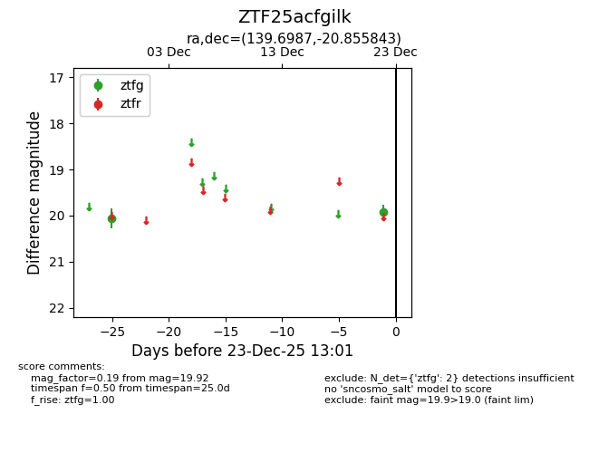
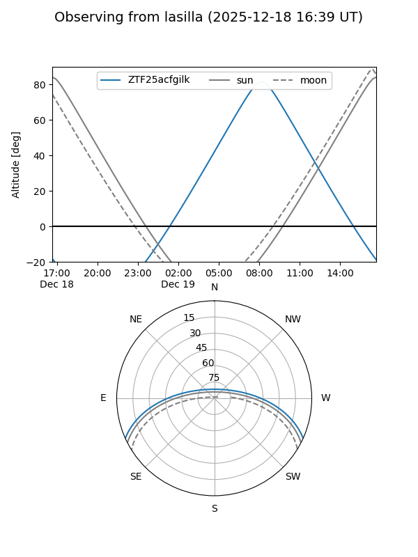
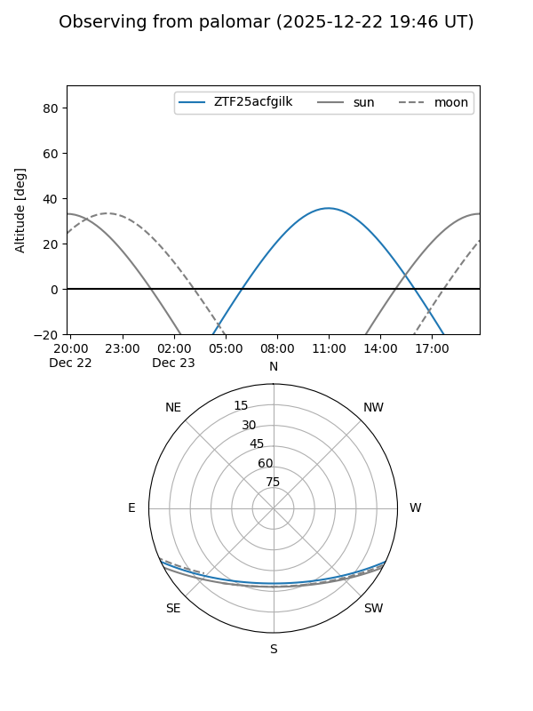

ZTF25acfgilk
Target ZTF25acfgilk at 2025-12-18 11:17
Aliases and brokers:
FINK: fink-portal.org/ZTF25acfgilk
Lasair: lasair-ztf.lsst.ac.uk/objects/ZTF25acfgilk
ALeRCE: alerce.online/object/ZTF25acfgilk
alt names
ZTF25acfgilk (ztf,fink_ztf)
Coordinates:
equatorial (ra, dec) = 139.6987,-20.85584
equatorial (HMS+DMS) = 09:18:47.68,-20:51:21.03
galactic (l, b) = (250.3577,+19.65221)
Photometry
last ztfg=20.06
1 ztfg detections
Lightcurve

Visibility


Additional plots